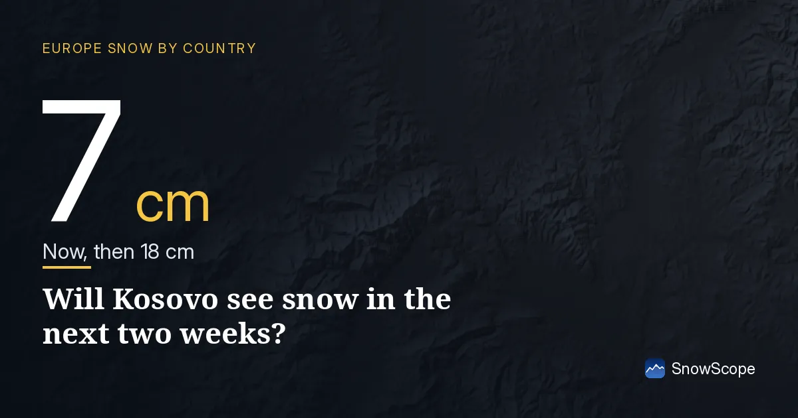
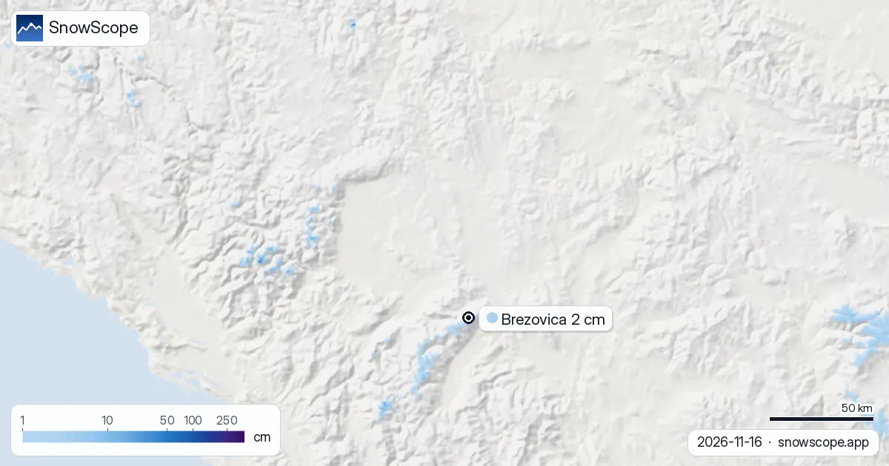

Will Kosovo see snow in the next two weeks? 7 cm now, then 18 cm
Kosovo will see meaningful snow over the next two weeks, but the pattern splits sharply. The forecast shows up to 7 cm in the first week and up to 18 cm in the second week (November 24-30), with the main snow arriving from November 20 and peaking around November 21 and again from November 24 onwards.
See the live snow forecast for Brezovica in the SnowScope appSnow depth, powder alerts and the 3D map, free.
First week light, second week heavy
The coming fourteen days break into two distinct snow regimes. Week one, through November 23, is relatively dry: SnowScope shows up to 7 cm new snow arriving.
The timing matters. November 21 marks the first significant snow day this week. Then a dry spell follows.
| Resort | Snow depth | New snow, 72 h | Coming, next days | Top |
|---|---|---|---|---|
| Brezovica | 2 cm | 8 cm | 0 cm | 2,261 m |

Dry until November 20, then accumulation begins
The immediate forecast is simple: no new snow for the next three days. Through November 19, SnowScope shows zero fresh accumulation across Kosovo. By November 23, the first week closes with about 7 cm total at peak elevations.
This is light snow for a mountain country. At Brezovica, Kosovo's only major resort (at 2261 m), only 8 cm accumulated in the past 72 hours despite being on higher ground. This tells you how thin the first week's snow will be: early season, weak systems, rapid melt at any elevation below the snow line.

Snow coverage jumped 50 km² in one day
Snow-covered area in Kosovo rose sharply yesterday: from 70 km² to 120 km² today, a gain of 50 km². This surge reflects the 5 cm maximum new snow that fell across the mountains in the past 72 hours. Almost all of Kosovo remains bare.
The Accursed Mountains and the Šar Mountains captured most of the recent snow. The Accursed Mountains received 37 cm in the past three days, by far the highest amount. The Šar Mountains got 13 cm. These are the snow machines of Kosovo right now, but even their snow is thin relative to past winters and concentrated only on the highest peaks. Below the snow line at 2100 metres, rapid melt is already occurring.
Best conditions: the high ranges, and later this month
If you want snow on the ground today, the Accursed Mountains and Šar Mountains are your only realistic options in Kosovo. Everywhere else is bare rock and grass. At Brezovica resort, the depth is just 2 cm—barely a trace—even though Brezovica sits at 2261 metres. This is early season at its thinnest. Rocks poke through almost everywhere. The situation will improve sharply from November 24 onward, when the second week's snow arrives.
The timing of the second week is important. If you have flexible travel dates, plan for November 24-30. That is when the forecast shows the heaviest snow. Early November (through the 23rd) is too thin to be worth the journey. Mid-to-late November is when Kosovo's ski season effectively begins.
Height rules snow: nothing below 2100 m today
The snow line today is at 2100 metres. Below that, the mountains are completely white-free. From 2000 to 2500 m—the zone where the best snow sits—the mean measured depth is only 2 cm, covering 57 percent of that band in scattered patches. From 500 to 2000 metres down, there is zero snow. This is classic early November: snow reaches only the highest peaks.
Elevation will drive your experience. If you stay above the snow line at 2100 metres or higher, you have a chance to find thin snow and a mix of bare ground. If you drop below 2100 metres, you are on grass and rock. As the second week's snow arrives, we expect the snow line to drop significantly, allowing accumulation at Brezovica and similar mid-height locations to begin in earnest.
Tips for skiers
- Check the Accursed Mountains and Šar Mountains if you are hunting early snow—those peaks hold the season's first real accumulation.
- Plan any ski trip for November 24 or later, when the second wave arrives; early November is too marginal.
- Before heading off-piste or into backcountry terrain, review the official avalanche bulletin for Kosovo.
- Watch the weather on November 24-30: that is when the heaviest snow is due, and visibility may drop sharply.
- High winds often follow the snow systems; stay alert for changing conditions and wind-loaded slopes.
About these numbers
Resort snow depths are the deepest snow on the resort's upper slopes on the date shown; they are estimates for an area, not a measurement at one point. Forecasts can change. Always read the official avalanche bulletin before going off-piste.
Cite this report
For research, teaching or the press: the numbers and charts are free to reuse under CC BY 4.0 with this citation.
SnowScope (2026), Will Kosovo see snow in the next two weeks? 7 cm now, then 18 cm, https://snowscope.app/blog/en/2026/11/kosovo-snow-report-16-november-2026.html, accessed 2026-11-16
SnowScope (Atlas Labs). (2026, November 16). Will Kosovo see snow in the next two weeks? 7 cm now, then 18 cm. SnowScope snow reports. https://snowscope.app/blog/en/2026/11/kosovo-snow-report-16-november-2026.html
BibTeX
@misc{snowscope2026kosovosnowreport16novemb,
author = {{SnowScope (Atlas Labs)}},
title = {Will Kosovo see snow in the next two weeks? 7 cm now, then 18 cm},
year = {2026},
month = nov,
howpublished = {\url{https://snowscope.app/blog/en/2026/11/kosovo-snow-report-16-november-2026.html}},
note = {Published 2026-11-16 20:42 UTC; accessed 2026-11-16}
}· CC BY 4.0 · Methods, data and tools →
Brezovica: snow and temperature by height, this winter vs last (tools) →
Follow Brezovica
Free: a message when fresh snow is coming, and the forecast every morning.
More snow reports

Snow is falling on Slovenia's ski mountains today: about 37 cm on Kanin and 21 cm on Krvavec. Where the snow lies, how it compares with past winters, and the next snowy day.

Tornik on Zlatibor had up to 39 cm on its upper slopes on 15 November 2026; by Wednesday it had melted. Kopaonik barely turned white. The week day by day and what comes next.

Savin Kuk above Žabljak picked up 22 cm of snow from 13 to 19 November and still has 6 cm today. Kolašin 1450 and 1600 are bare. The week day by day, and the next chances.